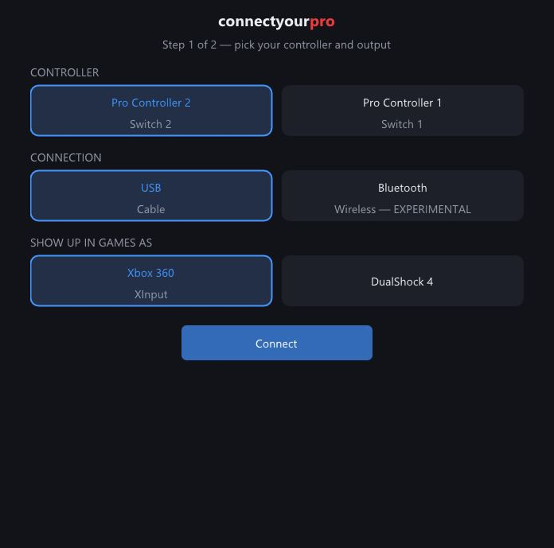
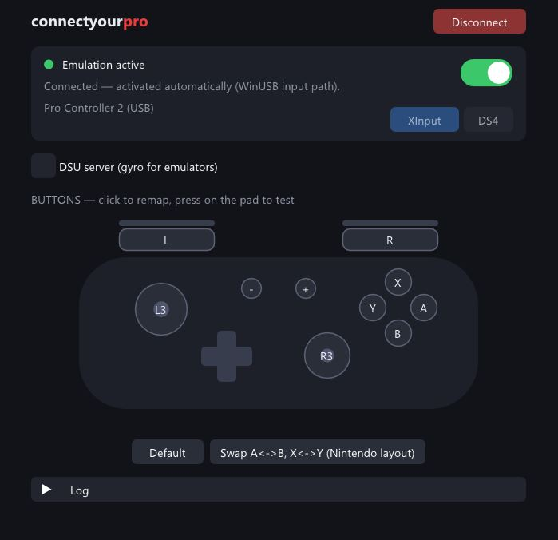

The Switch 2 Pro Controller does nothing when you plug it into a PC — it waits for a secret handshake only the console sends. connectyourpro sends it for you and turns the pad into an Xbox 360 or DualShock 4 controller every game understands.
On the console, the Switch 2 Pro Controller receives a proprietary activation sequence before it starts reporting input. A PC never sends it, so the pad just sits there. connectyourpro opens the controller's hidden USB interface, replays the exact activation handshake, then translates every report into a virtual Xbox 360 or DualShock 4 pad — the two controller types PC games actually support.
The full activation sequence is built in and runs on Connect. No browser, no procon2tool tab, no manual steps.
Show up in games as an Xbox 360 pad (works everywhere, including Forza) or a DS4. Switchable inside the app.
A schematic of your controller where every press lights up and the sticks move in real time. Know it works before the game starts.
Click any button on the schematic and pick what it outputs. One-click preset for the Nintendo A/B–X/Y swap.
Streams motion data over the Cemuhook protocol for Dolphin, Cemu and other emulators. Toggle it on the fly.
USB for the lowest latency. Bluetooth supported for both pads — experimental on the Pro Controller 2.
Run the installer. It also sets up the ViGEmBus driver — the piece of Windows plumbing that makes virtual gamepads possible — if you don't have it yet.
Pick your controller (Pro Controller 2 or 1), connection (USB or Bluetooth) and
output type, then press Connect. USB: just plug the cable in.
Bluetooth on ProCon 2: hold the SYNC button until the LEDs sweep — no Windows pairing needed.
Your games see a regular Xbox 360 or DS4 controller. Test buttons on the live schematic, remap if you like, and jump in.

